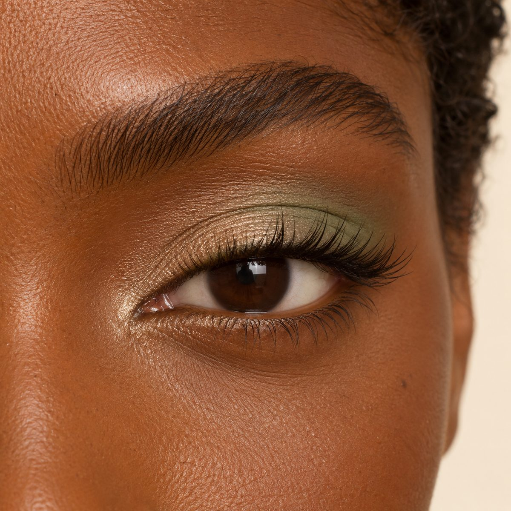
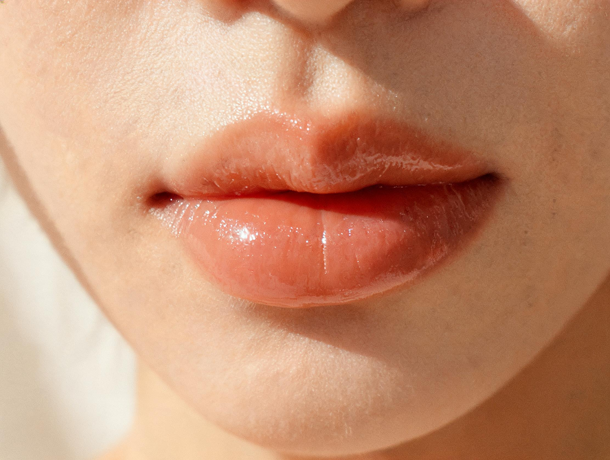
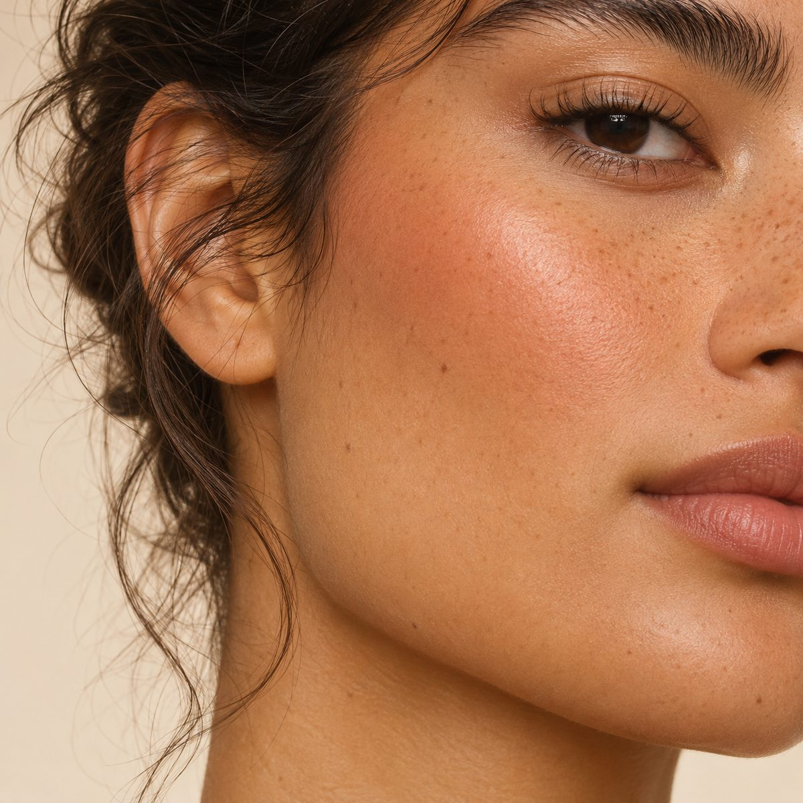
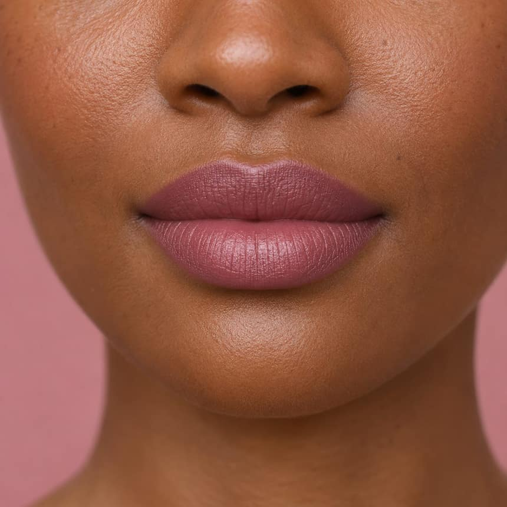
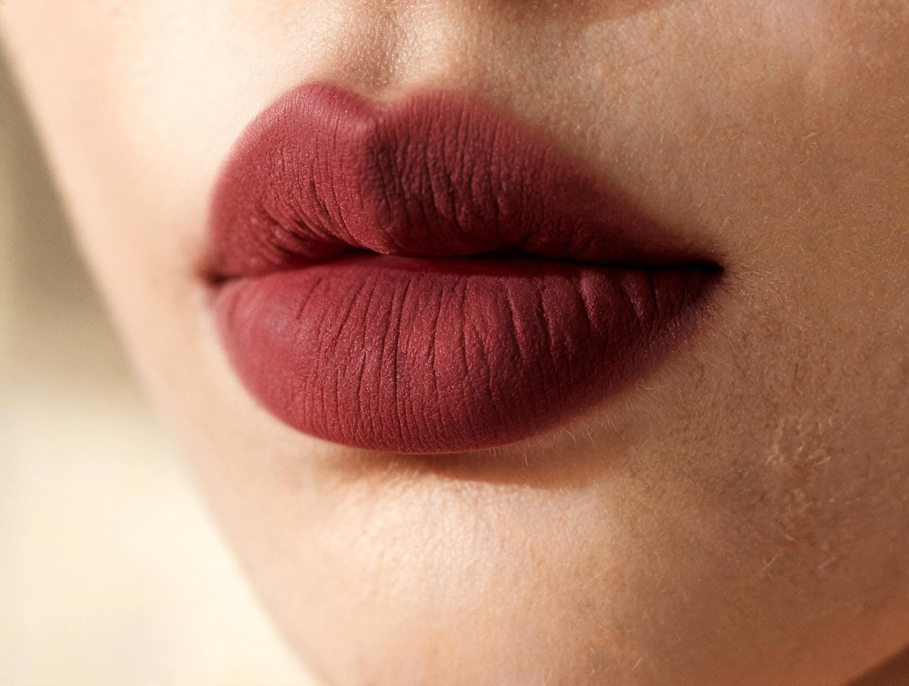
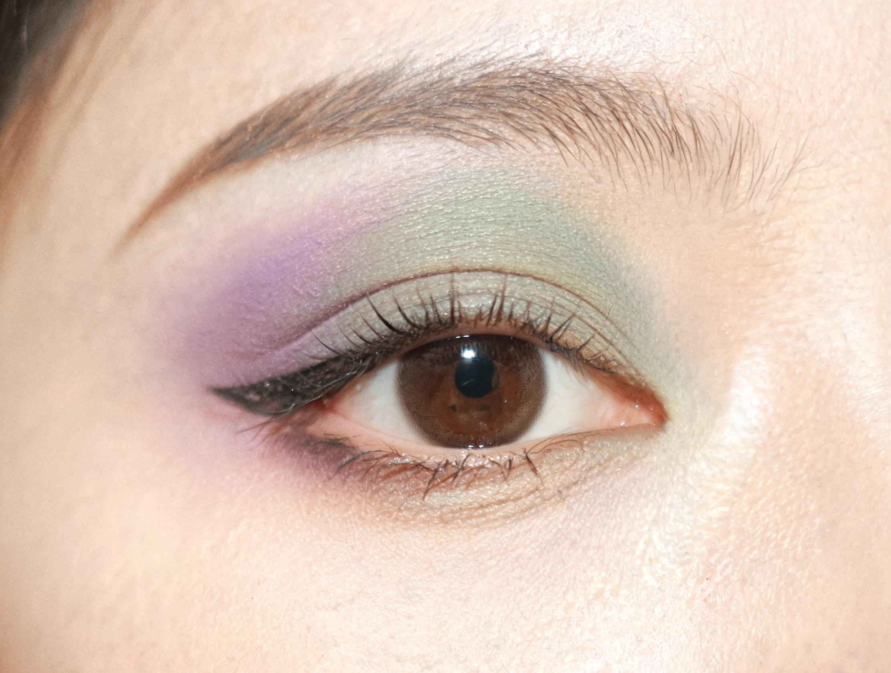

Nude Cuarzo Translúcido
Acabado luminoso y transparente.
Tu espacio personal
Sube una foto de cara y otra de cuerpo. Tu espacio personalizado estará disponible cuando el análisis esté listo.
Comprobando tu cuenta…
01 / Colorimetría
Tu guía de colores personalizada basada en tu estación, subtono y proporciones faciales.
01 / Tu paleta
Los colores que el análisis propone para tu rostro y tu ropa. Toca un tono para ver su ficha o copiar su código.
02 / Tu estación
Una lectura de tu subtono, contraste e intensidad. La iluminación de la foto puede cambiar el resultado; tu perfil declarado manda.
Una guía para explorar el color en tu ropa y maquillaje. La iluminación puede alterar el análisis. Puedes corregir los atributos declarados.
03 / Tu perfil
El análisis propone; tú confirmas. Estos datos afinan las recomendaciones sin pedir nuevas fotos.
Las fichas incompletas no permiten comprobar alergias. Un cambio de presupuesto no requiere nuevas fotos.
04 / Contrastes
Tonos que el análisis propone distanciar del rostro, con una alternativa cercana.
05 / Inspiración
Estilismos de referencia construidos con tu paleta. Son propuestas, no prendas que ya tengas.
01 / Tu semana
Un plan con las prendas que ya tienes. Cambia la fecha de inicio y prepara la semana; los días guardados se conservan.
02 / Tu look de hoy
El plan de hoy, con las prendas de tu inventario. Puedes recorrer los días y aceptar el conjunto cuando te encaje.
Sin conjuntos para hoy. Genera tu semana con las prendas de tu inventario.
Guarda la combinación actual para verla junto a tu paleta cada vez que abras tu espacio.
La foto se conserva como referencia. No se han calculado medidas corporales ni proporciones.
03 / Tu armario
Añade prendas reales. El calendario solo usa lo que está disponible en tu inventario.
04 / Tu silueta
La silueta y los escotes que el análisis propone. Son orientaciones de estilo, no medidas.
05 / Propuestas
Propuestas externas del análisis. No forman parte de tu inventario hasta que añadas tus prendas.
06 / Guardados
Los conjuntos que has aceptado, listos para volver a ellos.
Armario local: 0 conjuntos
07 / Espejo
Tu foto de cuerpo como referencia de espejo, sin cámara en vivo.
La foto se conserva como referencia. No se han calculado medidas corporales ni proporciones.
01 / En tu tono
Una lectura cercana de tu mirada, tus labios y tu piel, con los tonos que el análisis propone.



02 / Tu mapa
Forma del rostro, apertura ocular y colocación del color. Una guía para practicar, no una medida biométrica.
Ajusta brillo, opacidad y sombra sobre la muestra de tu look. Sin cámara en vivo.
Consulta de tonos, sin simulación sobre la foto ni cámara en vivo.
03 / Tu tutorial
El tutorial de hoy con sus materiales y pasos. Marca cada paso cuando lo hayas practicado.
04 / Labios
Tu tono recomendado y referencias de acabado. Las fichas del catálogo se muestran solo cuando están verificadas.
Acabado luminoso y transparente.
Un velo de color con brillo suave.

Tono rosado con acabado satinado.

Color aterciopelado de mayor intensidad.
05 / Colorete
Colocación del colorete y el iluminador según tu análisis.
06 / Mirada
Tus colores del análisis y dos referencias visuales de acabado.

Referencia editorial · matices suaves y luminosos.
Referencia editorial · contraste botánico satinado.
07 / Looks
Elige la ocasión para ver su guía de tonos.
01 / Antes de comprar
Escanea un producto, confirma el tono y consulta su afinidad con tu paleta. También puedes buscar por marca o código.
La captura se procesa solo cuando lo solicitas. No enviamos vídeo continuo.
Lectura facial: pendiente · Estilo y color: pendiente
02 / Catálogo
Catálogo inicial limitado al mercado indicado. Los precios, códigos y composición no verificados permanecen desconocidos.
03 / Looks
Construidos con tu paleta y tu estilo. No son compras disponibles ni enlaces.
04 / Diagnóstico
Una lectura fotográfica con sus límites. Lo que no se puede confirmar, se queda como pregunta.
05 / Referencias
Referencias editoriales de ejemplo para inspirarte.
Tu análisis
Sube una foto de cara y otra de cuerpo. Si el servidor usa Meta, ambas fotografías y tu cuestionario se envían a ese proveedor para generar el análisis. Las fotos se guardan privadas en tu cuenta hasta que elimines la cuenta. PNG, JPEG o WebP, máximo 8 MB y 20 megapíxeles. La foto se reduce antes de subirla.
Paso 1 de 4 · Tu nombre
¿Qué quieres lograr?
Sol y joyas: ¿qué te sienta?
Tu dossier de ejemplo ya está listo con la paleta Otoño Cálido Suave. Podrás cambiarlo cuando quieras.
Otoño Cálido Suave · 6 tonos
Tu cuenta
Tu armario vive en este dispositivo.
Debes tener al menos 16 años para registrarte. La fecha no se muestra en tu perfil.
Tu dossier viaja con tu cuenta.